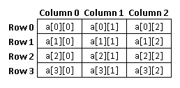

Introduction to Arrays and Pointers in C
Arrays
Quite often it is useful to group data into contiguous locations in memory. For example, say we are writing a program to compute the average temperature of a city. The data we are given is the daily temperature measured at noon.
Below is a function that computes the average:
int avg_temp(int temp1, int temp2, int temp3) {
return (temp1 + temp2 + temp3)/3;
}
But as you can see the function takes only three inputs. If we want to add another day to the average we have to re-write the function to take an additional parameter. A fifth data again requires change to the code.
One way to solve this problem (of having to keep changing code) is to group the temperature data into an array of integers. Here is how a int array is defined. We can optionally also specify the number of elements in the array. In the first example below the compiler figures out that the array has 5 integer elements. In the second example we explicitly tell the compiler we want an array of 4 elements and also specify the data.
//Temp in centigrade. We ignore fractions and hold only whole numbers in this example.
//Pretending we are in a nice place.
int temps[] = {25, 23, 27, 22, 26};
int scores[4] = {5, 9, 7, 2}
The individual elements of the array can be accessed like this:
temps[0]; // first element of the temps array from above
temps[4]; // last element of the temps array
uart_print_num(temps[2]); // print the third element
We can now rewrite the above function to take an integer array and a number specifying the size of the array.
int avg_temp(int temps[], int size) {
int sum = 0;
for (int i = 0; i < size; i++ ) {
sum += temps[i];
}
return sum/size;
}
In the function above we used the syntax - avg_temp(int temps[], int size) - this means that the function takes two parameters, an integer array and an integer. The actual number of elements in the array does not have to be specified as part of the array parameter. It is possible to access array elements beyond the last element in the array. However, one should not do that by design because we could be accessing memory of another variable. So the programmer has to keep track of the array length and ensure array access are within bounds. Accessing beyond the array bounds can lead to bugs (including serious security bugs) and crashes.
int scores[4] = {5, 9, 7, 2}
When an array is defined like scores above, the compiler sets aside memory to hold the specified amount of memory. In this case we are asking for memory to hold four integers. Integers are 32-bits (8 bytes), so the compiler sets aside 32 bytes of memory to hold the array. These integers are can be referred to as - scores[0], scores[1], scores[2], and scores[3]. Note that if the array has N elements, the index of the last element is N-1. The allocated memory is contiguous, meaning scores[0] is immediately followed by scores[1], which is immediately followed by scores[2] and so on.
The label assigned to the array (in this case scores) points to the memory location that is the start of the array. To this label the index times the size of the element is added to access individual elements. So when the programmer writes scores[0] the address of the first element is computed as the address pointed to by scores + 0 * size of an integer (i.e. 8 bytes). Similarly, the address of scores[3] = address of scores + 3 * 8.
We use typed variables in C to hold data. In a previous chapter we discussed the different types that are available to C programmers. Arrays are also typed and all values in the array are of the same type. In the example above we used an array of int. Since the size of an int is 8 bytes the compiler knows to scale the index by 8 when we index into the scores array.
Similar to int arrays we can create arrays of any type in C. Strings in C are a special type of char arrays. The difference between a regular character array and a string is that the last entry of a string is a special character - '\0'. Here is an example of a char array:
char name[] = "Suraj";
//The above statement allocates 6 bytes in memory to hold the characters.
When we define a character array like above the C compiler interprets that as a request for a string. So it automatically allocates one byte more than the total length of characters we have defined. The additional space is used to store the string termination character. So in reality the characters stored are - 'S', 'u', 'r', 'a', 'j', and '\0'.
2D arrays
The arrays that considered up to this point are one-dimensional(1D) arrays (a single dimension of elements). Certain data come naturally in the form of a table(as a table of rows and columns). Such data cannot be represented using 1D array, and would instead require a two-dimensional(2D) array. Two-dimensional array can be defined as an array of arrays. The 2D arrays are also known as matrix.
The syntax to declare the 2D array is given below.
data_type array_name[num_rows][num_columns];
For example:
int matrix[5][4];
Here 5 is the number of rows, and 4 is the number of columns.
The two-dimensional array can be initialized using either of following approaches:
int matrix[4][3]={{1,2,3},{2,3,4},{3,4,5},{4,5,6}};
or
int matrix[4][3]={1,2,3,2,3,4,3,4,5,4,5,6};
A matrix of 'M' rows and 'N' rows will have 'M * N' elements.
As explained in chapter "Integer instructions", a 2D array 'a' with 4 rows and 3 columns as shown below:

would be represented in memory as:

Pointers
A related concept to arrays is pointers. In the description of arrays above we said that the name of the array points to the memory location of the start of the array. What that means is the array name (scores) hold the address of the memory location where the first element of the array is stored. We can define pointer variables of other types - int, char, and float - that hold the address of the memory location holding the data.
Memory in (most) computers is byte addressable. This means that every byte (8-bits) of memory in the machine has an address. When the programmer defines a variable in C, the compiler allocates the appropriate size required at a specific location in memory. So int x; in a program instructs the compiler to reserve 8-bytes somewhere in memory. It also informs the compiler that we will be referring to this memory location in our program using the name x. Note that the programmer does not have the ability to specify where in memory those 8-bytes should be stored. The compiler decides the actual address to allocate and will allocate 8 contiguous bytes of memory for the variable x.
In the C programming language pointers are used to refer to the memory location of variables. In the code below we define a int variable x and initialize it with a value. The second line declares y as a pointer of type int. This means that y is now a variable that is intended to hold the address of another variable. In the third line we assign the address of x to y. Note that &x means "address of x". The very last statement we use *y to access the contents of the memory address pointed to by y. Since y is an integer (8-bytes) this means we are telling the compiler to interpret the 8 bytes starting from the address contained in y as an integer and pass it to uart_print_num.
int x = 2; // integer
int *y; // pointer to an integer
y = &x; // assign the address of x to the pointer y
uart_print_num(x); // this will print 2
uart_print_num(y); // this will print the address of x
// This will print the contents of the memory location pointed to by y.
// That memory location is also known in this program as x.
uart_print_num(*y); //this will print 2
It is important to note that a pointer is useful only when it points to a valid location in memory. For example if we had not assigned y to &x then it will contain an arbitrary value (not always 0). This means that when we later dereference y by using *y we will be attempting to access memory contents that may or may not be part of our program. Just like accessing memory beyond the array bounds, this can also lead to bugs (including serious security bugs) and crashes. It is up to the programmer to ensure that pointers in the program always point to valid and intended memory locations.
This may seem interesting (or complex) but how are pointers useful? One way they are useful is to allow functions to manipulate data rather than copy of a data. When we pass a parameter to a function, behind the scenes, a copy of the value is created and the function sees the copy.
void some_fn(int y) {
y = y * 2;
}
void main() {
int x = 5;
some_fn(x);
uart_print_num(x); // what will be printed?
}
In the example above we pass a int to the function some_fn. No this creates a copy of the contents of variable x and gives that copy to the function via the stack (we will see more about that shortly). Inside some_fn we are using a copy of x. Note that even if the function was defined as void some_fn(int x) the x parameter used inside the function and the one in main are different memory locations that just happen to have the same name. Changing the value of a parameter passed this way will not change the original. So any changes inside some_fn will not affect the value of x in main. The last statement in main will print 5.
However, if we rewrite the code so that some_fn is passed a int * instead of an integer then instead of a copy the address of x will be passed. Here is that code:
void some_fn(int *y) {
*y = *y * 2;
}
void main() {
int x = 5;
some_fn(&x);
uart_print_num(x); // what will be printed?
}
Note that there are two changes from the earlier version. The signature of the function is now some_fn(int *y). Also, when we call this function we are passing it the address of x using the syntax &x. Inside the function we tell the compiler to multiply the contents of the integer at address y and multiply that by 2. The result is then stored in the memory address pointed to by y. Since we are operating on the "memory address of x" (also known as y inside some_fn) the actual contents of the variable x will now be changed. The final print statement will print 10.
That was a whirlwind tour of arrays and pointers. Now that we know a little about them let us practice using them by doing a few programming exercises.
Find maximum number in an array (Integer array)
The objective of this exercise is to find the maximum number in a given array of numbers.
File to be used for this exercise is : exercises/c_functions/find_max.c. This file provides following skeleton. You will have to add code in 'find_max' function to find the find the maximum number in the given array of numbers.
#define NUM_ELEMENTS 7
int integer_array[NUM_ELEMENTS] = {2, 5, 6, 1, 3, 7, 0};
int find_max(int integer_array[], int n)
{
int i;
// Initialize 'max_val' variable as first element of array
int max_val = integer_array[0];
// Add code to iterate through array elements and find the maximum value in 'integer_array' and store the result in 'max_val'
// Your code starts here
// Your code ends here
// return the maximum value 'max_val'
return max_val;
}
void main()
{
int result = 0;
// Find the element with maximum value in array 'integer_array' and store the result in variable 'result'
// Your function called here
result = find_max(integer_array, 7);
uart_print_num(result);
}
To compile and run:
COMPILE_COMMAND: make find_max.elf
RUN_COMMAND: make run
Pseudo code:
- Initialize a variable (say max_val) with first element of array
- Iterate through array elements using a loop
- Compare every element of array with current maximum val in variable 'max_val'.
- If the array element is greater than 'max_val', update variable 'max_val' with current array element
- Return the maximum value 'max_val' (at the end of loop after iterating through all the elements of array)
A sample implementation of the above pseudo code is available in find_max_solution.c file.
To compile and run:
COMPILE_COMMAND: make find_max_solution.elf
RUN_COMMAND: make run
Memcopy (Pointers/String)
We have already done multiple exercises to copy data from one location to another in the assembly programming section. In this exercise the objective is to write a memcopy function in C that will copy the specified amount of data from one memory location to another.
To compile and run:
COMPILE_COMMAND: make memcopy.elf
RUN_COMMAND: make run
You should write your code in the designated location in the file memcopy.c
#include "uart.h"
void memcopy(char *dest, char *src, int n)
{
// Add code below to to copy the contents from source array 'src' to destination array 'dest'
// Number of characters to be copied is provided in argument 'n'
//Your code here
}
void main()
{
char src_str[] = "Hello";
char dest_str[10] = "Howdy";
// Your code starts here
memcopy(dest_str, src_str, 6);
// Your code ends here
uart_puts(src_str);
uart_puts(dest_str);
}
Pseudo code:
- Iterate through all the characters of source string 'src' using a for/while loop. The length of the string is provided in argument 'n'
- Copy the current character from source string 'src' to destination string 'dest'
A sample implementation of the above pseudo code is available in memcopy_solution.c file.
To compile and run:
COMPILE_COMMAND: make memcopy_solution.elf
RUN_COMMAND: make run
Find substring in a string (Nested loops, break statement)
In this exercise, given two strings orig_str and str_to_find, the objective is to find if str_to_find is a substring of orig_str. If yes, return the 1, else return 0.
You should write your code in the designated location in the file find_substring.c
int find_substring(char *orig_str, char *str_to_find, int orig_str_len, int sub_str_len)
{
// Add code below to find substring 'str_to_find' in 'orig_str'. The length of original string and substring are provided in 'orig_str_len' and 'sub_str_len'
// Your code starts here
// Your code ends here
}
void main()
{
char original_string[] = "Hello World!";
char string_to_find[10] = "Wor";
int found = 0;
// Your function gets called here
found = find_substring(original_string, string_to_find, 12, 3);
uart_puts(original_string);
uart_puts(string_to_find);
uart_print_num(found);
}
To compile and run:
COMPILE_COMMAND: make find_substring.elf
RUN_COMMAND: make run
Pseudo code:
- Loop for every index in the given string 'orig_str'. End at (orig_str_len - sub_str_len) as there cannot be a substring match after that point
- Add a nested loop to iterate through the provided substring 'str_to_find'. Its length is available in argument 'sub_str_len'
- Check if the current character in substring 'str_to_find' matches with the corresponding character in original string 'orig_str'
- Exit the inner nested loop if the check in Step 3 results in a mismatch
- At the end of inner nested loop, check if the inner loop had completed iterating through all elements of substring before exiting the loop
- If the check in step 5 results in true implying all the characters in substring matched, return '1' to imply success and exit the function
- If the check in step 5 results in false, go back to outer loop started in step 1 to move to next character of 'orig_str'
- If the outer loop started in step 1 ends (without check in Step 5 resulting in true), return '0' to imply that there is no match
A sample implementation of the above pseudo code is available in find_substring_solution.c file.
To compile and run:
COMPILE_COMMAND: make find_substring_solution.elf
RUN_COMMAND: make run
Matrix addition (2-D array)
In this exercise, we will take two square matrices, 'A' and 'B' as input parameters and store the result in matrix 'C'. Two matrices can be added only if they have the same dimensions. The result will be a matrix of the same dimensions. To perform the addition, numbers in matching positions in the input matrices are added and the result is placed in the same position in the output matrix.
You should write your code in the designated location in the file matrix_addition.c
#define N 3
int A[N][N] = { {1, 2, 3},
{4, 5, 6},
{7, 8, 9},
};
int B[N][N] = { {1, 1, 1},
{2, 2, 2},
{3, 3, 3},
};
int C[N][N] = { {0, 0, 0},
{0, 0, 0},
{0, 0, 0},
};
void matrix_add(int A[][N], int B[][N], int C[][N])
{
// Add code below
// Your code starts here
// Your code ends here
}
void main()
{
// Your function called here
matrix_add(A, B, C)
}
To compile and run:
COMPILE_COMMAND: make matrix_addition.elf
RUN_COMMAND: make run
Pseudo code:
- Start a loop for iterating through all the row of matrices 'A' and 'B'
- Start a nested loop(within the loop started in step 1) to iterate through all the columns of matrices 'A' and 'B'
- Add the corresponding elements from matrix 'A' with matrix 'B' and store the result in corresponding position in matrix 'C' (That is, sum of A[i][j] and B[i][j] into C[i][j])
- At the end of loops started in step 1 and 2, the result of sum of matrix 'A' and 'B' will be available in matrix 'C'
A sample implementation of the above pseudo code is available in matrix_addition_solution.c file.
To compile and run:
COMPILE_COMMAND: make matrix_addition_solution.elf
RUN_COMMAND: make run